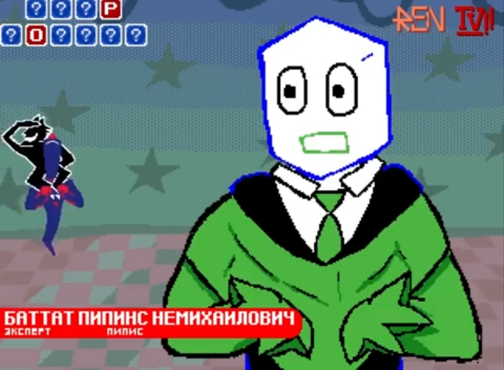
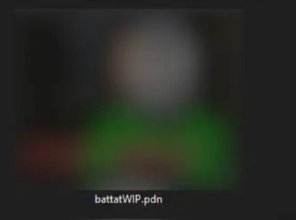
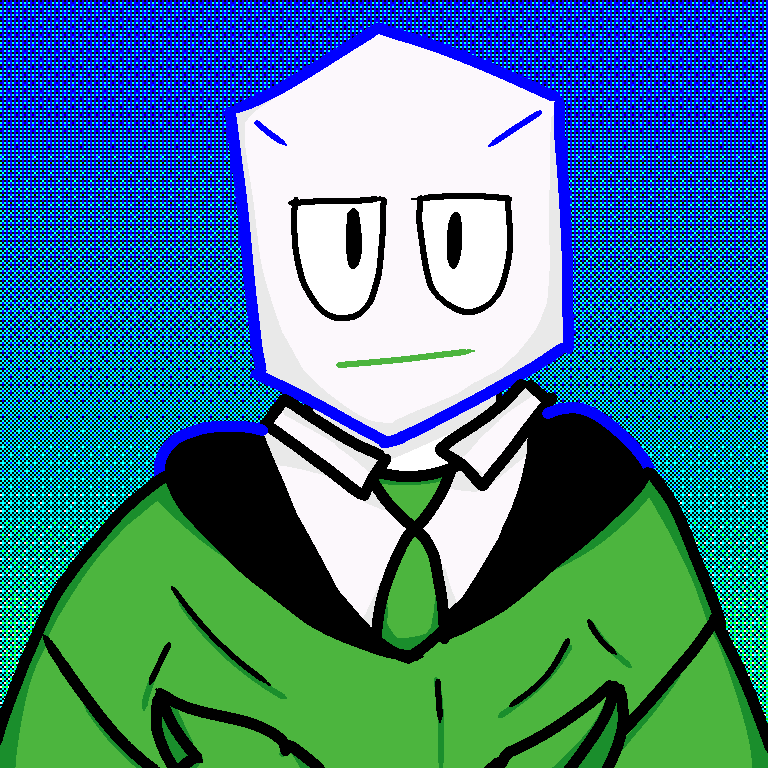

| [[Главная страница]] | ЗАНЯТЬ | ЗНАНЯТЬ ЕЩЕ | ЗВОНИ | [[Сделки]] | насчет | |
ВнешностьБаттат Пипинс Немихайлович — невысокий чел, с белой кубической головой. На его лице два белых глаза с черными зрачками и зеленый рот. Обычно он носит костюм с зеленым пальто, черной рубашкой и белым воротником с зеленым галстуком. Его руки состоят из трех заостренных пальцев и полностью скрыты под костюмом. На нем также черные штаны, закрывающие ноги. Он очень ярко раскрашен, с неоново-синим контуром. Галерея  |
 Баттат Пипинс Немихайлович
*Пол: муж. „Пельмень внешне напоминает планету Сатурн...“ —Баттат Пипинс |
|
Copyright © 1997 Dumpy Kromers Все права защищены. �������� �������������� |
|